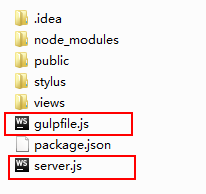

搭建web静态服务器
创建项目根目录（或者从github仓库clone）并创建node项目
初始化
执行此步骤前提条件为：
①有过项目，但是使用环境更改的，比如更换电脑等
②没有项目，但是有package.json文件的
ps:以上条件不满足者从头老老实实搭建项目结构+安装各种插件（下文）
满足条件的还需要两个js配置文件，请拉倒最下面附录！
npm init按默认要求敲击enter键- name[可修改] - version [可修改] - description[可不写] - entry point[可不写] - text command[暂时不写] - git repository[git仓库地址] - keywords[可不写] - author[可不写] - license[默认]
安装express包，属于项目依赖
npm install express --save
成功标志：出现node_modules文件夹
安装gulp包，属于开发依赖
npm install gulp -g
取消默认扫描
此步骤针对webstorm以及类似的编译器：由于上传文件和检查代码过程中编译器会自动检索node_modules包，因为操作量巨大极可能导致编译器卡死甚至电脑死机现象，此步骤必点！
- 在编译器中右击node_modules文件夹选择Mark Directory As Exclusion（取消自动扫描）
创建项目详细结构（从原本项目仓库clone者忽略这步骤）
- 新建入口文件 server.js
- 新建public/ 文件夹，用来存放静态文件css、js、img等
- 新建views/ 文件夹，用来存放html文件
- 新建routes/ 文件夹，用来存放路由文件[用来接受请求]
- 新建 .gitignore文件[忽略不必要的上传]
- node_modules/
- .project
- .idea/
- *.exe
- logs/
- .vscode/
- *.log
- *.bak
- …
- 新建stylus/ 文件夹，用来存放styl文件
gulp 基本操作
基本命令
- gulp.task[创建一个任务]
- gulp.src[获取要处理的文件或目录-待定匹配模式]
- gulp.dest[处理后的文件输出]
- gulp.watch[动态监听文件更改]
配置文件gulpfile.js[不可改，特定名称]
- 引入gulp等所需模块或插件
- 创建任务
- 创建编译stylus 文件/压缩文件等等
- 监听文件变更
安装所需插件
npm install gulp-stylus --save-dev安装stylus自动编译npm install gulp-minify-css --save-dev安装css压缩插件npm install gulp-uglify --save-dev安装js压缩插件npm install gulp-nodemon --save-dev启动node插件，不需要每次手动去启动npm install browser-sync --save-dev代理，自动刷新页面- 可能用到的git命令如下
git rm -r --cached<filename>停止git追踪指定文件夹或文件git pull origin master获取远程仓库更新mkdir<name>创建一个目录ls查看当前目录下的文件及其目录ls -a同上，包含隐藏文件git initgit add .git commit -m 'message'git config --global user.email 'email'git config --global user.name 'name'git config --listgit status
Stylus
css预处理框架，使用表达式生成css
另外常用两款框架：
sass 最早最成熟的css预处理语言
less 受sass影响很大且使用css语法，易上手
手动编译
- 通过cmd控制台进入到项目文件夹（不想吐槽win系统自带的控制台，推荐使用Git）
- 执行命令
stylus --compress styl所在文件夹目录
compress：生成压缩版的css文件stylus --compress styl所在文件夹目录/ --out css文件夹目录
输出到另一个css目录文件夹下
css转换成styl文件：
stylus --css css所在目录/css文佳全称 styl文件目录/styl文件全称
ps:若输出到同一目录下的相同名称的styl文件，则不需要styl文件目录/styl文件全称
自动编译
以下步骤当项目静态服务器搭建好后应该已经执行完，不用去管
- gulp安装
cnpm install gulp -ggulp -v查看是否成功 - 配置json文件
进入项目根目录，新建package.json文件 - 本地安装gulp插件
cnpm install gulp --save-dev
在根目录下出现node_modules/文件夹则代表安装成功 - 安装gulp-stylus插件
cnpm install gulp-stylus --save-dev - 新建gulpfile.js文件
Stylus语法
单行注释不会被编译到css中，而多行注释会被自动编译到css中
- 去除原生css中的{}和:和;
使用首行文字+换行缩进的格式，嵌套的标签继续前一级缩进 - &符号:代表父级，h标签下的类名为h缩进后&.类名
- 可以使用变量
scolor = red
以下所有需要使用红色的地方可直接使用scolor作为属性样式的颜色 - @符号：可以计算数值
height 800pxwidth (@height/2)有运算符时必须加括号
@引用会冒泡向上寻找离@最近的，直到父级为止 - 当使用css3兼容性样式时，前缀样式可以用一个方法封装起来
border-radius(val) 使用时，调用border-radius(10px) - 迭代(循环遍历)
for in包含边界：1..5 >>> 1 2 3 4 5 不包含边界：1...5 >>> 1 2 3 4
123
for row in 1..5 tr:nth-child({row}) height 10px*row
- @import 引入外部文件
@import’demo.css’写在.styl文档最顶端
@import’demo’不加后缀默认为引入.styl文件
@font-face 引入字体文件
@font-face
font-family myFont(自己取名)
src url()
url()
url()
PS:通常字体文件共4个，全部导入，为了满足不同的浏览器
-------------------------------------------------
@media 指定媒体类型
@media
all 所有类型
screen 电脑屏幕
print 打印机
max-width
min-width
[max-]device-width/device-height 设备宽度
@media 关键词：
and/only 限定关键词/not
@media only screen and (min-width:800px){}
当浏览器屏幕大于800px时所表现的样式，这行代码要写在整体样式后，不然会被覆盖
-------------------------------------------------
@keyframes myAnimate(自己取名)
0%
...
50%
...
100%
...
0%
...
附录
项目结构
若你使用的项目和我不同，为了实现自动编译和自动刷新效果，请在两个js文件里做更改

gulpfile.js
|
|
server.js
|
|
package.json
|
|
此文章最近更新与 2017-1-15 16:30:38